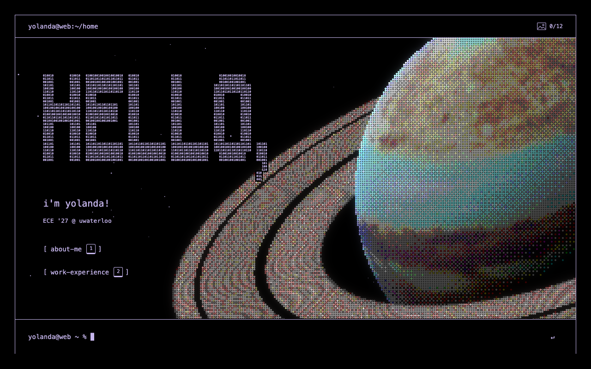
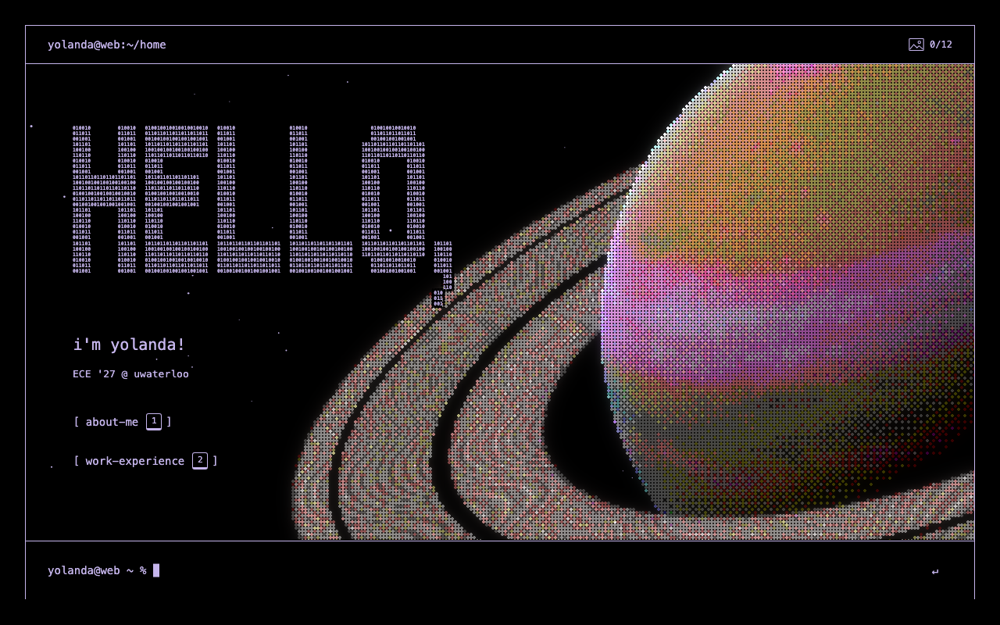

01 · Prismatic atmosphere

A full spectrum of violet, rose, coral, gold and turquoise in turbulent cloud bands.
Source-based cloud structure, expressive colour and mineral rings, rendered through Lumen’s LED dots and bloom. Original crop and movement retained.
View the goal, baseline comparison and evaluation status · Candidate: surface detail and dot dominance remain under review.
A full spectrum of violet, rose, coral, gold and turquoise in turbulent cloud bands.

Pearl highlights, blue-green shadows, lavender and warm mineral seams.

Petal-like magenta, orange, butter yellow and deep indigo. Closest to the flower’s warm light.
Select a material, then drag the planet or use the arrow keys while it has focus.
Local concept study. Powered by Lumen by Matthew Hamilton (MIT). The live website has not been changed.